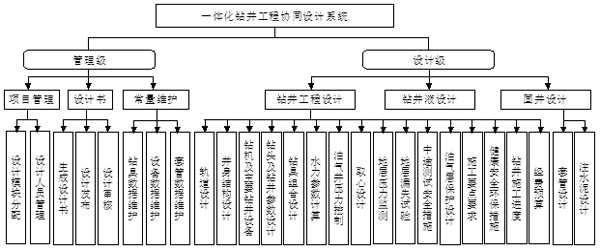
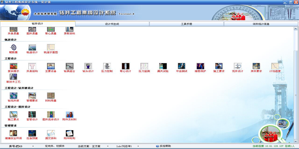
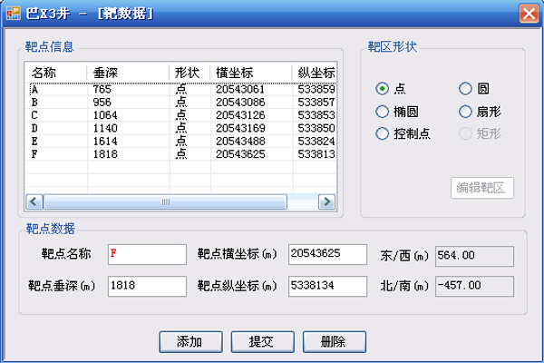
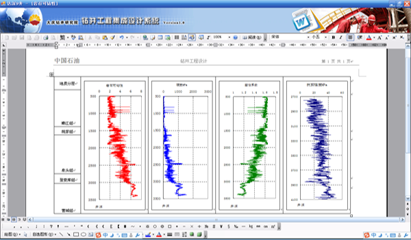
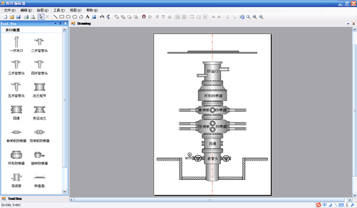

Search
虚拟仿真实验教学资源
一体化钻井工程设计
虚拟仿真实验教学资源
一体化钻井工程设计
科学钻井水平的提高，在一定程度上依靠钻井设计水平的提高，这就需要在网络环境下集地质设计、钻井工程设计和钻井实钻过程信息共享于一体，实现不同领域、不同级别、不同地域的设计人员按照一定的规范和流程进行协同设计。“一体化钻井工程设计系统”就是利用计算机数据库技术和网络技术，在统一的软硬件平台上构建具有自主知识产权的石油钻井工程集成设计系统，使多个钻井工程设计人员或分布在不同地区的设计人员在信息共享的基础上进行协同设计成为现实。系统目前已经成功应用于大庆油田、大港油田等中石油企业，同时作为虚拟实验教学仿真中心的软件支撑平台，可以为学生开设钻井工程课程设计、全国石油工程设计大赛等实践教学环节。系统按照钻井设计业务功能分为设计项目管理、钻井工程设计、钻井液设计、固井设计、设计书生成和系统维护等6个模块（如图1所示）。

图1 一体化钻井工程协同设计系统功能模块

图2 设计软件主界面

图3 靶数据

图4 钻头设计

图5 井口设计
①协同设计管理
协同设计管理主要是用于设计负责人对设计任务进行管理，按照功能模块灵活地分配和协调每口井的设计任务，并可以进行设计状态的监管。具体的设计人员可以在设计级软件中看到相应的设计任务。
②轨道设计
轨道设计用于设计定向井或水平井的井眼轨道参数，主要包括靶数据、轨道设计和轨道图三部分。每个靶点的东西南北坐标系统会自动根据靶点的坐标和井口坐标自动计算。轨道设计可以按直增式、三段式、五段式、圆弧段和稳斜段不同的轨道设计方式逐段进行设计。轨道设计完成以后，用户可以自动绘制垂直剖面图、水平投影图和剖面示意图等。
③井身结构设计
井身结构设计在考虑到同一开次可能会使用不同尺寸的钻头以及同一层套管可能会有不同尺寸的套管存在的情况，将井身结构的钻头尺寸、套管尺寸和封固段设计分开来进行设计。
④钻具组合设计
可以实现不同开次的各趟钻具组合的总体设计和详细设计。并可以实现对定向井专用工具、常用打捞工具和每趟钻具组合的强度校核图的录入及加载。
⑤钻头设计
钻头设计主要包括地层可钻性预测、钻头设计、钻井参数和水力参数设计。
⑥井口设计
压力控制主要包括井口装置图绘制、井口及套管试压要求、节流及压井管汇绘制以及井控要求。对于各开次井口装置和节流及压井管汇，系统提供了方便灵活的专业图形绘制程序。
⑦完井设计
完井设计是用来进行完井方法和完井井口设计，系统提供了专业绘图程序。
⑧计划进度
计划进度是用来预测钻井的各个阶段的计划进度，并根据数据自动绘制计划进度图。
⑨欠平衡钻井设计
对于欠平衡钻井，需要设计其井场布局和井口装备。
一体化钻井工程设计系统可以广泛使用于本科生和研究生《钻井工程》课程中的相关计算、课程设计、全国石油工程设计大赛、专业技术人员培训等实践教学环节。表2为“一体化钻井工程设计系统”在实验课程中的应用。
一体化钻井工程设计系统支持的课程与实验项目
| 序号 | 课程名称/教学时数 | 实验项目/实验时数 | 应用方式 |
|---|---|---|---|
| 1 | 钻井工程（双语）/54 | 钻柱、水力参数计算等/8/4 | 辅助计算 |
| 2 | 钻井工程课程设计/2周 | 井身结构设计等/8 | 辅助设计 |
| 3 | 全国石油工程设计大赛/1月 | 钻井设计/20 | 辅助设计 |
| 4 | 专业技术人员钻井培训/54 | 钻井集成设计/20 | 辅助设计 |